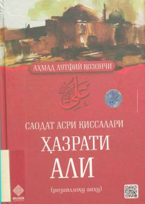

HAHazrati Ali roziyallohu anhuning hayoti va islom tarixidagi faoliyatiga bag'ishlangan tarixiy-badiiy qissa.
Ushbu kitobda to'rt roshid xalifaning biri bo'lgan hazrati Aliyning hayoti, faoliyati va islom tarixidagi o'rni tarixiy ma'lumotlarga asoslangan holda badiiy bayon etiladi. Asar "Saodat asri qissalari" turkumiga kirib, o'quvchilarga davr voqealari va sahobalarning hayot yo'li haqida qiziqarli ma'lumotlar beradi.